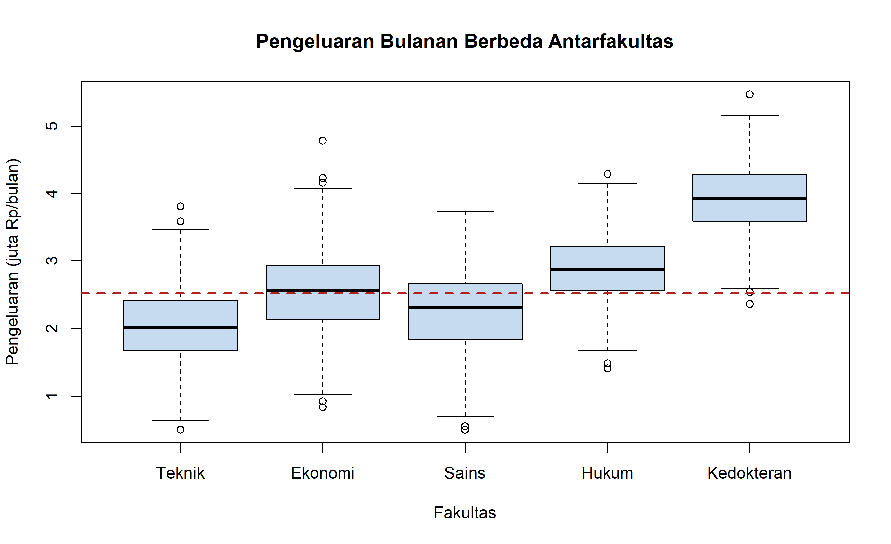
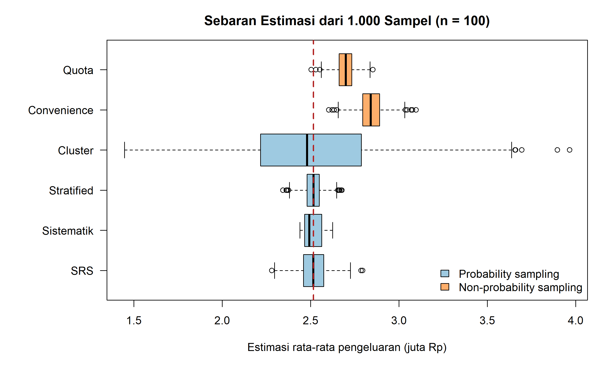
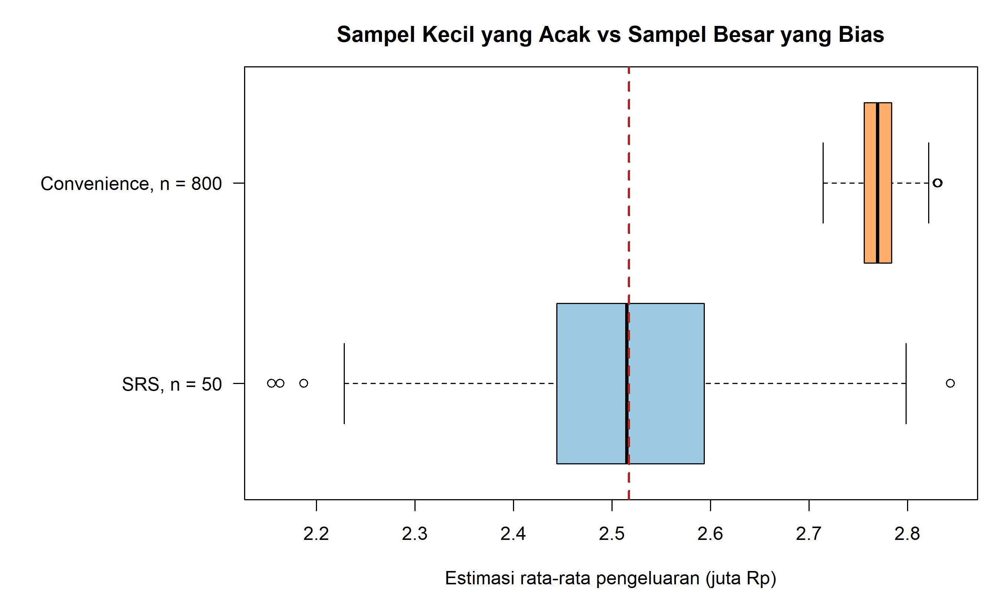
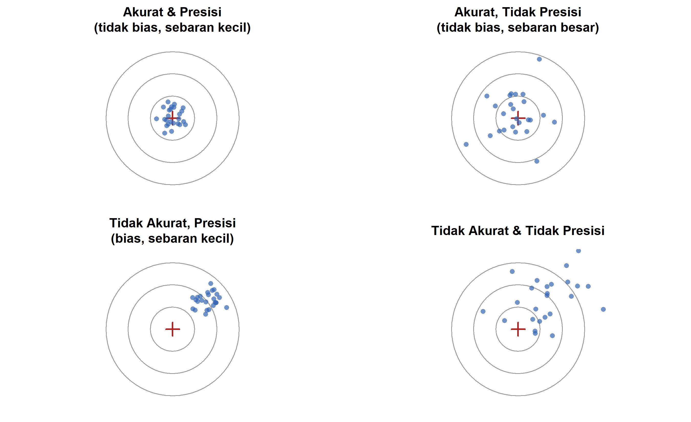
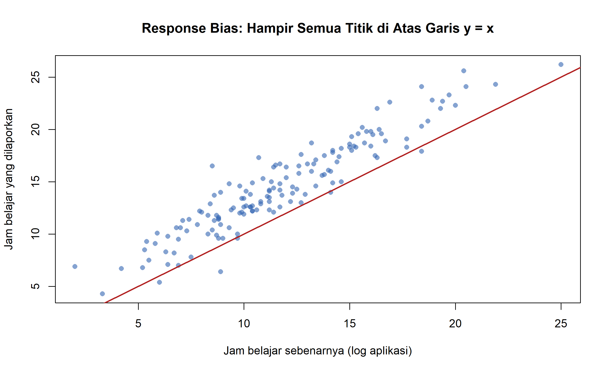
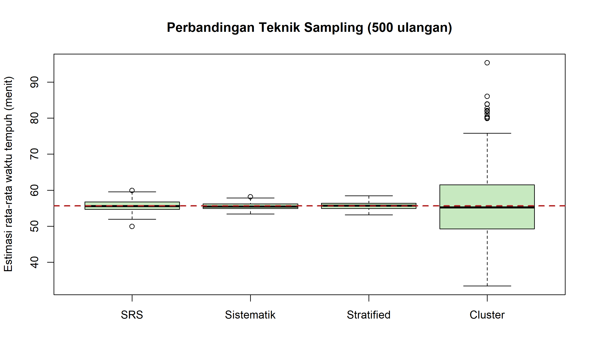

Mencatat perilaku/kejadian secara langsung tanpa bertanya
Data perilaku nyata, bukan pengakuan
Tidak dapat mengungkap alasan/opini; bisa mengubah perilaku yang diamati
Menghitung kendaraan di persimpangan; mencatat kadar TSS di titik pantau
Survei (kuesioner)
Mengajukan pertanyaan terstruktur kepada banyak responden
Murah, cepat, menjangkau banyak orang
Rentan bias respons dan nonrespons; kedalaman terbatas
Survei kepuasan pelanggan online
Wawancara
Tanya jawab langsung, terstruktur atau mendalam
Informasi mendalam; bisa menggali alasan
Mahal, lama, sampel kecil; rentan bias pewawancara
Wawancara tokoh masyarakat tentang dampak proyek
Eksperimen
Peneliti memberi perlakuan secara acak lalu mengukur dampaknya
Satu-satunya cara yang kuat untuk menyimpulkan sebab-akibat
Tidak selalu etis atau praktis; kondisi bisa artifisial
Uji A/B dua desain halaman checkout
3.1.2 Studi Observasional vs Eksperimen
Perbedaan kuncinya: siapa yang menentukan perlakuan?
Pada studi observasional, subjek “memilih sendiri” kondisinya; peneliti hanya mencatat.
Pada eksperimen, peneliti menetapkan perlakuan secara acak (random assignment).
Mengapa pengacakan penting? Karena ia menyeimbangkan faktor-faktor lain – termasuk yang tidak kita ketahui – di antara kelompok. Tanpa pengacakan, perbedaan hasil bisa disebabkan oleh variabel pengganggu (confounder).
Ilustrasi: apakah mengikuti kelas tambahan (bootcamp) meningkatkan nilai ujian? Kita simulasikan 200 mahasiswa. “Motivasi” memengaruhi keduanya: mahasiswa bermotivasi tinggi lebih mungkin ikut bootcamp dan memang cenderung bernilai tinggi. Efek sebenarnya dari bootcamp adalah +3 poin.
Studi observasional melebih-lebihkan efek bootcamp
Desain
Selisih_rata_nilai
Rata_motivasi_ikut
Rata_motivasi_tidak
Observasional (memilih sendiri)
8.82
0.46
-0.54
Eksperimen (diacak)
3.84
0.05
-0.10
Efek sebenarnya
3.00
NA
NA
Pada studi observasional, kelompok yang ikut bootcamp memang lebih termotivasi sejak awal, sehingga selisih nilainya jauh melebihi efek sebenarnya. Pada eksperimen, pengacakan membuat rata-rata motivasi kedua kelompok hampir sama, sehingga selisih nilainya mendekati efek sebenarnya (+3).
3.2 Kerangka Sampel (Sampling Frame)
Kerangka sampel adalah daftar nyata unit populasi tempat sampel diambil – misalnya daftar mahasiswa aktif, daftar pelanggan di CRM, atau daftar desa dalam satu kabupaten.
Kondisi
Akibat
Contoh
Kerangka = populasi
Ideal
Daftar lengkap seluruh karyawan untuk survei internal
Kerangka kurang dari populasi (undercoverage)
Sebagian populasi tidak mungkin terpilih
Survei telepon rumah tidak menjangkau warga tanpa telepon rumah (Literary Digest)
Kerangka memuat unit di luar populasi
Unit tak relevan terpilih
Daftar pelanggan memuat akun yang sudah tidak aktif
Semua teknik probability sampling di bawah ini hanya seakurat kerangka sampelnya.
3.2.1 Populasi Simulasi
Untuk seluruh bagian sampling, kita memakai populasi simulasi 2.000 mahasiswa yang tersebar di 5 fakultas dan 40 kelas (masing-masing 50 mahasiswa). Variabel utama yang ingin kita duga adalah pengeluaran bulanan (juta rupiah).
set.seed(2026)jumlah_fak <-c(Teknik =600, Ekonomi =500, Sains =400, Hukum =300, Kedokteran =200)rata_fak <-c(Teknik =2.2, Ekonomi =2.6, Sains =2.0, Hukum =2.8, Kedokteran =4.0)pop <-data.frame(id =1:2000, fakultas =rep(names(jumlah_fak), jumlah_fak))pop$kelas <-paste0(substr(pop$fakultas, 1, 3), "-",ave(pop$id, pop$fakultas, FUN =function(i) ceiling(seq_along(i) /50)))efek_kelas <-setNames(rnorm(length(unique(pop$kelas)), 0, 0.35), unique(pop$kelas))pop$pengeluaran <-round(pmax(0.5, rata_fak[pop$fakultas] + efek_kelas[pop$kelas] +rnorm(2000, 0, 0.5)), 2)pop$jam_kerja <-round(pmax(0, rnorm(2000, 8, 6))) # jam kerja paruh waktu per mingguN <-nrow(pop)mu_pengeluaran <-mean(pop$pengeluaran) # parameter yang ingin didugahead(pop)
id fakultas kelas pengeluaran jam_kerja
1 1 Teknik Tek-1 1.80 0
2 2 Teknik Tek-1 2.77 5
3 3 Teknik Tek-1 1.78 5
4 4 Teknik Tek-1 2.54 6
5 5 Teknik Tek-1 1.97 14
6 6 Teknik Tek-1 3.09 5
table(pop$fakultas)
Ekonomi Hukum Kedokteran Sains Teknik
500 300 200 400 600
length(unique(pop$kelas))
[1] 40
mu_pengeluaran
[1] 2.517125
boxplot(pengeluaran ~factor(fakultas, levels =names(jumlah_fak)), data = pop,col ="#c6dbef", xlab ="Fakultas", ylab ="Pengeluaran (juta Rp/bulan)",main ="Pengeluaran Bulanan Berbeda Antarfakultas")abline(h = mu_pengeluaran, col ="firebrick", lwd =2, lty =2)

Perhatikan bahwa pengeluaran berbeda jelas antarfakultas (Kedokteran tertinggi). Fakta ini penting untuk memahami mengapa sebagian teknik sampling lebih unggul dari yang lain.
3.3 Probability Sampling
Pada probability sampling, setiap unit dalam kerangka sampel memiliki peluang terpilih yang diketahui dan lebih dari nol, dan pemilihannya dilakukan secara acak. Hanya dengan cara inilah kita dapat mengukur ketidakpastian estimasi secara sah (dasar statistika inferensial).
Kita akan mengambil sampel berukuran n = 100 dengan empat teknik.
n <-100
3.3.1 Simple Random Sampling (SRS)
Setiap unit – dan setiap kombinasi \(n\) unit – memiliki peluang terpilih yang sama. Analoginya: mengundi nama dari sebuah kotak.
table(sampel_srs$fakultas) # komposisi fakultas terjadi secara kebetulan
Ekonomi Hukum Kedokteran Sains Teknik
19 13 8 22 38
Kelebihan: paling sederhana, dasar teori statistika. Kelemahan: butuh kerangka lengkap; komposisi sampel bisa “kebetulan” tidak seimbang (misalnya fakultas kecil kurang terwakili).
3.3.2 Systematic Sampling
Pilih setiap unit ke-\(k\) dari kerangka, dengan titik awal acak:
\[k = \frac{N}{n}, \qquad \text{titik awal } r \sim \text{acak di antara } 1, \dots, k, \qquad \text{unit terpilih: } r,\ r + k,\ r + 2k, \dots\]
set.seed(12)k <- N / n # interval = 20r <-sample(1:k, 1) # titik awal acakidx_sis <-seq(from = r, by = k, length.out = n)head(idx_sis, 10)
Ekonomi Hukum Kedokteran Sains Teknik
25 15 10 20 30
Karena kerangka kita terurut menurut fakultas, systematic sampling otomatis menyebar ke semua fakultas secara proporsional – mirip stratified sampling.
Bahaya periodisitas. Jika kerangka memiliki pola berulang yang kebetulan sama dengan interval k (misalnya daftar transaksi harian yang dipilih setiap 7 hari – selalu jatuh di hari yang sama), sampel sistematik akan bias. Periksa urutan kerangka sebelum memakai teknik ini.
3.3.3 Stratified Sampling
Populasi dibagi menjadi kelompok homogen yang disebut strata (di sini: fakultas), lalu diambil SRS dari setiap strata. Dengan alokasi proporsional, ukuran sampel tiap strata sebanding dengan ukurannya di populasi:
\[n_h = n \times \frac{N_h}{N}\]
alokasi <-round(n * jumlah_fak / N)alokasi
Teknik Ekonomi Sains Hukum Kedokteran
30 25 20 15 10
set.seed(13)idx_str <-unlist(lapply(names(alokasi), function(f)sample(which(pop$fakultas == f), alokasi[[f]])))sampel_str <- pop[idx_str, ]table(sampel_str$fakultas) # komposisi DIJAMIN sesuai populasi
Ekonomi Hukum Kedokteran Sains Teknik
25 15 10 20 30
mean(sampel_str$pengeluaran)
[1] 2.4458
Kelebihan: menjamin setiap strata terwakili dan – jika strata berbeda satu sama lain – lebih presisi daripada SRS. Kelemahan: butuh informasi strata untuk seluruh kerangka.
3.3.4 Cluster Sampling
Populasi dibagi menjadi kelompok alami yang disebut klaster (di sini: kelas). Beberapa klaster dipilih secara acak, lalu semua anggota klaster terpilih diamati.
set.seed(14)kelas_terpilih <-sample(unique(pop$kelas), size =2) # 2 kelas x 50 = 100 mahasiswakelas_terpilih
Kelebihan: murah dan praktis – cukup mendatangi 2 kelas, tanpa perlu daftar seluruh mahasiswa. Kelemahan: anggota satu klaster cenderung mirip satu sama lain, sehingga 100 mahasiswa dari 2 kelas membawa informasi lebih sedikit daripada 100 mahasiswa yang dipilih acak dari seluruh kampus (presisi lebih rendah).
3.3.5 Stratified vs Cluster: Jangan Tertukar
Aspek
Stratified
Cluster
Kelompok yang dibentuk
Strata: homogen di dalam, berbeda antarstrata
Klaster: idealnya heterogen di dalam (miniatur populasi)
Yang diacak
Unit di dalam setiap strata
Klaster-nya; semua unit klaster terpilih diamati
Semua kelompok terwakili?
Ya
Tidak, hanya klaster terpilih
Tujuan utama
Meningkatkan presisi dan keterwakilan
Menghemat biaya dan waktu
3.4 Non-probability Sampling
Pada non-probability sampling, unit dipilih tidak secara acak – berdasarkan kemudahan, pertimbangan peneliti, atau kuota. Peluang terpilih setiap unit tidak diketahui, sehingga ketidakpastian estimasi tidak dapat diukur secara sah dan hasilnya berisiko bias.
Teknik
Cara memilih
Kapan wajar dipakai
Risiko
Convenience
Siapa saja yang mudah dijangkau
Uji coba kuesioner (pilot), eksplorasi awal
Hanya mewakili kelompok yang mudah dijangkau
Purposive (judgmental)
Dipilih berdasarkan pertimbangan/kriteria peneliti
Mewawancarai ahli atau informan kunci
Bergantung penilaian subjektif peneliti
Quota
Memenuhi kuota per kelompok, tetapi pemilihan di dalam kelompok tidak acak
Survei cepat dengan anggaran terbatas
Komposisi tampak mewakili, tetapi bias di dalam kelompok tetap ada
Kita simulasikan bahwa convenience sampling dilakukan di kantin kampus. Mahasiswa berpengeluaran tinggi lebih sering jajan di kantin, sehingga lebih mudah dijangkau.
pop$peluang_kantin <-plogis(-3+1.1* pop$pengeluaran) # makin besar pengeluaran, makin sering ke kantinround(tapply(pop$peluang_kantin, pop$fakultas, mean)[names(jumlah_fak)], 2)
Teknik Ekonomi Sains Hukum Kedokteran
0.33 0.45 0.38 0.54 0.78
library(knitr)set.seed(15)# Convenience: yang kebetulan ada di kantinidx_conv <-sample(1:N, n, prob = pop$peluang_kantin)# Purposive: peneliti memilih hanya mahasiswa Teknik ("karena paling aktif berorganisasi")idx_purp <-sample(which(pop$fakultas =="Teknik"), n)# Quota: kuota per fakultas proporsional, tetapi diisi dengan siapa yang ada di kantinidx_quota <-unlist(lapply(names(alokasi), function(f) { kandidat <-which(pop$fakultas == f)sample(kandidat, alokasi[[f]], prob = pop$peluang_kantin[kandidat])}))kable(data.frame(Teknik =c("Parameter (populasi)", "Convenience", "Purposive", "Quota"),Rata_pengeluaran =round(c(mu_pengeluaran, mean(pop$pengeluaran[idx_conv]),mean(pop$pengeluaran[idx_purp]),mean(pop$pengeluaran[idx_quota])), 3)), caption ="Estimasi rata-rata pengeluaran dari sampel non-probabilitas (n = 100)")
Estimasi rata-rata pengeluaran dari sampel non-probabilitas (n = 100)
Teknik
Rata_pengeluaran
Parameter (populasi)
2.517
Convenience
2.657
Purposive
1.989
Quota
2.703
Convenience dan quota samplingmelebih-lebihkan pengeluaran (mahasiswa kantin lebih boros), sedangkan purposive sampling hanya menggambarkan mahasiswa Teknik. Perhatikan bahwa quota sampling sudah memiliki komposisi fakultas yang “benar”, tetapi tetap bias karena di dalam setiap fakultas yang terpilih adalah pengunjung kantin.
3.5 Simulasi: Membandingkan Akurasi dan Presisi
Satu sampel bisa saja “beruntung” atau “sial”. Untuk menilai sebuah teknik secara adil, kita ulangi setiap teknik 1.000 kali dan melihat sebaran estimasinya.
par(mar =c(5, 8, 3, 1))boxplot(hasil_sim, horizontal =TRUE, las =1,col =c(rep("#9ecae1", 4), rep("#fdae6b", 2)),xlab ="Estimasi rata-rata pengeluaran (juta Rp)",main ="Sebaran Estimasi dari 1.000 Sampel (n = 100)")abline(v = mu_pengeluaran, col ="firebrick", lwd =2, lty =2)legend("bottomright", bty ="n", fill =c("#9ecae1", "#fdae6b"),legend =c("Probability sampling", "Non-probability sampling"))

par(mar =c(5, 4, 4, 2) +0.1)
Interpretasi:
Keempat teknik probability samplingtidak bias – kotaknya berpusat di sekitar garis merah (parameter).
Stratified (dan sistematik pada kerangka yang terurut per fakultas) paling presisi, karena variasi antarfakultas “dikunci” oleh desain.
Cluster paling tidak presisi: sampel dari 2 kelas bisa saja kebetulan dua kelas Kedokteran (sangat boros) atau dua kelas Sains (hemat).
Convenience dan quotabias – kotaknya bergeser ke kanan. Bias ini tidak hilang meskipun diulang ribuan kali.
3.5.1 Memperbesar Sampel Tidak Menyembuhkan Bias
Inilah pelajaran Literary Digest. Bandingkan SRS kecil dengan convenience sampling besar:
set.seed(2028)srs_kecil <-replicate(500, mean(pop$pengeluaran[sample(1:N, 50)]))conv_besar <-replicate(500, mean(pop$pengeluaran[sample(1:N, 800, prob = pop$peluang_kantin)]))par(mar =c(5, 11, 3, 1))boxplot(list("SRS, n = 50"= srs_kecil, "Convenience, n = 800"= conv_besar),horizontal =TRUE, las =1, col =c("#9ecae1", "#fdae6b"),xlab ="Estimasi rata-rata pengeluaran (juta Rp)",main ="Sampel Kecil yang Acak vs Sampel Besar yang Bias")abline(v = mu_pengeluaran, col ="firebrick", lwd =2, lty =2)

par(mar =c(5, 4, 4, 2) +0.1)
Convenience sample berukuran 800 sangat presisi (kotaknya sempit) tetapi presisi di tempat yang salah. SRS berukuran 50 kurang presisi, tetapi berpusat di nilai yang benar. Memperbesar sampel hanya mengecilkan galat acak, bukan galat sistematik (bias).
3.6 Bias dalam Pengumpulan Data
3.6.1 Akurasi vs Presisi
Bias adalah kesalahan sistematik: estimasi secara konsisten melenceng ke satu arah. Berbeda dengan galat acak yang “saling meniadakan” bila diulang.
set.seed(5)papan_target <-function(pusat_x, pusat_y, sebaran, judul) {plot(NULL, xlim =c(-3, 3), ylim =c(-3, 3), asp =1, axes =FALSE,xlab ="", ylab ="", main = judul)symbols(rep(0, 3), rep(0, 3), circles =c(2.7, 1.8, 0.9), inches =FALSE,add =TRUE, fg ="grey60")points(0, 0, pch =3, col ="firebrick", cex =2, lwd =2)points(rnorm(25, pusat_x, sebaran), rnorm(25, pusat_y, sebaran),pch =16, col =rgb(0.2, 0.4, 0.7, 0.7))}par(mfrow =c(2, 2), mar =c(1, 1, 3, 1))papan_target(0, 0, 0.3, "Akurat & Presisi\n(tidak bias, sebaran kecil)")papan_target(0, 0, 1.0, "Akurat, Tidak Presisi\n(tidak bias, sebaran besar)")papan_target(1.4, 1.2, 0.3, "Tidak Akurat, Presisi\n(bias, sebaran kecil)")papan_target(1.2, 1.0, 1.0, "Tidak Akurat & Tidak Presisi")

par(mfrow =c(1, 1), mar =c(5, 4, 4, 2) +0.1)
Tanda silang merah adalah parameter yang ingin diduga; titik-titik biru adalah estimasi dari sampel berulang.
3.6.2 Jenis-jenis Bias
Jenis Bias
Terjadi pada tahap
Penyebab
Contoh
Sampling / selection bias
Pemilihan sampel
Sebagian populasi lebih (atau tidak) mungkin terpilih
Literary Digest; survei di kantin
Nonresponse bias
Pengumpulan
Yang tidak menjawab berbeda secara sistematik dari yang menjawab
Mahasiswa yang sibuk bekerja tidak sempat mengisi survei
Response bias
Menjawab
Responden menjawab tidak jujur/tidak akurat
Melebih-lebihkan jam belajar; pertanyaan yang menggiring
Measurement bias
Pengukuran
Alat ukur atau prosedur keliru secara sistematik
Timbangan yang tidak dikalibrasi; sensor TSS yang drift
Nonresponse Bias
Survei dikirim ke 300 mahasiswa yang dipilih acak (desain sudah benar). Namun mahasiswa yang banyak bekerja paruh waktu lebih jarang membalas.
Sampel yang diundang mewakili populasi, tetapi responden yang membalas tidak – rata-rata jam kerja paruh waktu menjadi terlalu rendah. Pengacakan di awal tidak menolong jika tingkat respons rendah dan terkait dengan variabel yang diukur. Cara mengurangi: pengingat (follow-up), insentif, dan membandingkan karakteristik responden dengan populasi.
Response Bias
Mahasiswa diminta melaporkan sendiri jam belajarnya. Karena ingin terlihat rajin (social desirability), rata-rata mereka melebih-lebihkan sekitar 3 jam.
plot(jam_sebenarnya, jam_dilaporkan, pch =16, col =rgb(0.2, 0.4, 0.7, 0.6),xlab ="Jam belajar sebenarnya (log aplikasi)", ylab ="Jam belajar yang dilaporkan",main ="Response Bias: Hampir Semua Titik di Atas Garis y = x")abline(0, 1, col ="firebrick", lwd =2)

Bias susunan kalimat pertanyaan juga termasuk response bias:
Pertanyaan menggiring (hindari)
Pertanyaan netral (gunakan)
“Setujukah Anda bahwa aplikasi baru yang lebih cepat ini memudahkan Anda?”
“Bagaimana penilaian Anda terhadap kecepatan aplikasi baru?”
“Berapa jam Anda membuang waktu di media sosial setiap hari?”
“Berapa jam rata-rata Anda menggunakan media sosial setiap hari?”
“Apakah Anda puas dengan harga dan pelayanan kami?” (dua hal sekaligus)
Pisahkan menjadi dua pertanyaan: harga, lalu pelayanan
Measurement Bias
Dua sensor mengukur kadar TSS (mg/L) sampel air yang sama. Sensor B belum dikalibrasi dan selalu membaca 8 mg/L lebih tinggi.
library(knitr)set.seed(23)tss_sebenarnya <-48sensor_A <-round(tss_sebenarnya +rnorm(20, 0, 3), 1) # galat acak sajasensor_B <-round(tss_sebenarnya +8+rnorm(20, 0, 1), 1) # bias +8, tetapi sangat konsistenkable(data.frame(Sensor =c("A (terkalibrasi)", "B (tidak terkalibrasi)"),Rata_pembacaan =c(mean(sensor_A), mean(sensor_B)),SD_pembacaan =round(c(sd(sensor_A), sd(sensor_B)), 2),Bias =round(c(mean(sensor_A), mean(sensor_B)) - tss_sebenarnya, 2)), caption ="Sensor B presisi tetapi tidak akurat")
Sensor B presisi tetapi tidak akurat
Sensor
Rata_pembacaan
SD_pembacaan
Bias
A (terkalibrasi)
48.77
2.60
0.77
B (tidak terkalibrasi)
55.89
0.82
7.89
Sensor B tampak “lebih baik” karena pembacaannya konsisten, padahal selalu melenceng. Jika baku mutu TSS adalah 50 mg/L, sensor B akan melaporkan pelanggaran palsu secara terus-menerus. Solusinya adalah kalibrasi rutin terhadap standar.
3.7 Studi Kasus Komprehensif: Merancang Survei Adopsi QRIS Pedagang Pasar
Konteks: Dinas Koperasi dan UMKM sebuah kabupaten ingin mengetahui proporsi pedagang pasar tradisional yang sudah menerima pembayaran QRIS. Terdapat daftar resmi 1.200 pedagang di 4 pasar. Anggaran hanya cukup untuk mewawancarai 120 pedagang. Diketahui pasar di pusat kota jauh lebih “digital” daripada pasar di pinggiran.
Pasar Sentral Pasar Baru Pasar Tani Pasar Desa
50 35 20 15
set.seed(405)idx_pasar <-unlist(lapply(names(alok_pasar), function(p)sample(which(pedagang$pasar == p), alok_pasar[[p]])))sampel_pasar <- pedagang[idx_pasar, ]head(sampel_pasar[, c("id", "pasar")], 8) # daftar kerja untuk enumerator
id pasar
313 PDG-0313 Pasar Sentral
468 PDG-0468 Pasar Sentral
433 PDG-0433 Pasar Sentral
30 PDG-0030 Pasar Sentral
193 PDG-0193 Pasar Sentral
67 PDG-0067 Pasar Sentral
20 PDG-0020 Pasar Sentral
157 PDG-0157 Pasar Sentral
Perbandingan desain survei (proporsi sebenarnya = 0.521)
Desain
Rata_estimasi
Bias
SD_estimasi
Stratified
0.519
-0.002
0.040
SRS
0.522
0.001
0.044
Cluster_blok
0.521
0.000
0.093
Hanya_Pasar_Sentral
0.699
0.178
0.036
3.7.4 Pertanyaan Diskusi dan Jawaban
1. Mengapa stratified sampling menurut pasar adalah pilihan terbaik?
Karena tingkat adopsi QRIS sangat berbeda antarpasar (strata homogen di dalam, berbeda antarstrata). Stratifikasi menjamin setiap pasar terwakili sesuai proporsinya sehingga SD estimasinya paling kecil di antara desain yang tidak bias. (Desain “hanya Pasar Sentral” memang ber-SD kecil, tetapi presisi di nilai yang salah.) Hasil sampel kita: \(\hat{p}\) = 0.558 dibanding proporsi sebenarnya 0.521.
2. Mengapa survei yang hanya dilakukan di Pasar Sentral menyesatkan?
Ini contoh purposive/convenience sampling (pasar terbesar dan termudah dijangkau). Estimasinya sekitar 0,7, jauh di atas proporsi sebenarnya, karena Pasar Sentral adalah pasar paling digital. Kesimpulan “mayoritas pedagang sudah memakai QRIS” akan membuat pemerintah mengabaikan pasar pinggiran yang paling membutuhkan pendampingan.
3. Kapan cluster sampling per blok layak dipilih?
Jika biaya perjalanan antarlapak mahal atau kerangka per pedagang tidak tersedia. Harganya adalah presisi lebih rendah (SD terbesar di antara desain acak). Kompromi yang sering dipakai adalah gabungan: stratifikasi per pasar, lalu memilih blok secara acak di dalam setiap pasar (multistage sampling).
4. Bias apa yang masih mungkin muncul meskipun desainnya acak?
Undercoverage: pedagang tidak resmi tidak ada dalam daftar. (b) Nonresponse: pedagang yang sibuk menolak diwawancarai. (c) Response bias: pedagang mengaku “menerima QRIS” karena merasa diawasi dinas – sebab itu wawancara dilengkapi observasi stiker QRIS di lapak.
3.8 Latihan Mandiri
3.8.1 Latihan Utama: Survei Pengguna Transportasi Umum
Konteks: Pemerintah kota ingin memperkirakan rata-rata waktu tempuh harian (menit) penglaju. Tersedia daftar 3.000 rumah tangga di 6 kecamatan (masing-masing dibagi menjadi RW berisi 50 rumah tangga). Anggaran: 150 rumah tangga.
set.seed(505)kec <-c(Pusat =700, Utara =600, Selatan =550, Timur =450, Barat =400, Pinggiran =300)rata_tempuh <-c(Pusat =35, Utara =50, Selatan =55, Timur =60, Barat =65, Pinggiran =95)rt <-data.frame(id =1:3000, kecamatan =rep(names(kec), kec))rt$rw <-paste(rt$kecamatan, ave(rt$id, rt$kecamatan, FUN =function(i) ceiling(seq_along(i) /50)))rt$waktu_tempuh <-round(pmax(5, rnorm(3000, rata_tempuh[rt$kecamatan], 12)))mu_tempuh <-mean(rt$waktu_tempuh)
Tugas 1: Ambil SRS berukuran 150 dan hitung rata-rata waktu tempuhnya
boxplot(sim_rt, col ="#c7e9c0", ylab ="Estimasi rata-rata waktu tempuh (menit)",main ="Perbandingan Teknik Sampling (500 ulangan)")abline(h = mu_tempuh, col ="firebrick", lwd =2, lty =2)

Jawaban: Keempat teknik tidak bias (bias mendekati 0). Stratified dan sistematik (kerangka terurut per kecamatan) memiliki SD terkecil karena waktu tempuh sangat berbeda antarkecamatan. Cluster 3 RW memiliki SD terbesar – jika kebetulan terpilih RW di Pinggiran, estimasinya melonjak.
Tugas 6 (Tantangan): Bias survei di halte pusat kota
Petugas hanya mewawancarai penglaju di halte kecamatan Pusat. Simulasikan estimasinya dan jelaskan arah biasnya.
Jawaban: Estimasi jauh di bawah parameter (bias negatif) karena warga pusat kota tinggal dekat dengan tempat aktivitasnya. Kebijakan yang didasarkan pada angka ini akan meremehkan beban perjalanan warga pinggiran – persis kelompok yang paling membutuhkan layanan transportasi.
3.8.2 Latihan Tambahan (Self-Check)
Kerjakan soal-soal berikut secara mandiri sebelum melihat kunci jawaban pada komentar kode.
Soal A. Tentukan teknik sampling: (1) Memilih setiap pelanggan ke-50 dari daftar CRM mulai dari nomor acak 17. (2) Membagi karyawan per departemen lalu mengambil 10% secara acak dari tiap departemen. (3) Mengundi 5 sekolah dari 80 sekolah, lalu mensurvei semua guru di 5 sekolah itu. (4) Menyebar kuesioner melalui grup WhatsApp angkatan. (5) Mewawancarai 8 kepala desa yang dianggap paling memahami konflik lahan. (6) Mengisi 50 responden laki-laki dan 50 perempuan dari siapa pun yang lewat di mal.
Soal B. Sebuah aplikasi meminta pengguna memberi rating setelah transaksi. Hanya 4% pengguna yang memberi rating, dan rata-ratanya 4,8 dari 5. Bias apa yang paling mungkin? Mengapa?
# Kunci jawaban:# Nonresponse bias (juga disebut voluntary response bias): pengguna yang memberi rating# sukarela cenderung yang sangat puas (atau sangat kecewa), tidak mewakili 96% lainnya.# Rating 4,8 kemungkinan besar terlalu tinggi dibanding kepuasan seluruh pengguna.
Soal C. Dari populasi pop pada praktikum ini, ambil stratified sample berukuran 200 dengan alokasi proporsional menurut fakultas, lalu bandingkan rata-rata pengeluarannya dengan parameter.
# Estimasi akan sangat dekat dengan parameter (selisih umumnya < 0,05 juta).
Soal D. Sebuah studi menemukan bahwa pengguna yang berlangganan fitur premium berbelanja 40% lebih banyak. Manajer menyimpulkan: “Fitur premium membuat pengguna berbelanja lebih banyak.” Kritik kesimpulan ini dan usulkan desain yang lebih baik.
# Kunci jawaban:# Studi ini observasional: pengguna MEMILIH SENDIRI berlangganan premium. Pengguna yang# memang sudah gemar berbelanja lebih mungkin berlangganan (confounding / self-selection).# Desain lebih baik: eksperimen (uji A/B) -- acak sebagian pengguna untuk menerima uji coba# premium gratis, lalu bandingkan belanja kelompok perlakuan dan kontrol.
3.9 Kesalahan Umum dalam Pengumpulan dan Sampling Data
Mengira sampel besar pasti akurat – sampel besar yang bias tetap bias (Literary Digest).
Menyamakan “acak” dengan “sembarangan” – memilih “siapa saja yang lewat” adalah convenience sampling, bukan random sampling.
Tertukar antara stratified dan cluster – stratified mengambil sebagian unit dari setiap kelompok; cluster mengambil semua unit dari sebagian kelompok.
Mengabaikan kualitas kerangka sampel – unit yang tidak ada dalam daftar tidak akan pernah terpilih.
Memakai systematic sampling pada daftar yang berpola periodik – sampel dapat selalu jatuh pada pola yang sama.
Menganggap quota sampling setara dengan stratified sampling – komposisinya sama, tetapi pemilihan di dalam kuota tidak acak.
Mengabaikan tingkat respons – sampel acak dengan tingkat respons rendah dapat mengalami nonresponse bias.
Menyimpulkan sebab-akibat dari studi observasional – gunakan eksperimen dengan pengacakan bila memungkinkan.
Menulis pertanyaan yang menggiring atau bermakna ganda – merusak data sebelum dianalisis.
Menganggap alat ukur yang konsisten pasti benar – presisi tidak sama dengan akurasi; kalibrasi alat secara rutin.
Tidak mendokumentasikan metode sampling – pembaca tidak dapat menilai sejauh mana hasil dapat digeneralisasi.
3.10 Cheat Sheet: Fungsi R yang Digunakan
Fungsi
Kegunaan
sample(x, size)
Simple random sampling tanpa pengembalian
sample(x, size, prob = p)
Pemilihan dengan peluang tidak sama (simulasi bias/convenience)
sample(rep(c(0, 1), each = m))
Pengacakan perlakuan dalam eksperimen
seq(from = r, by = k, length.out = n)
Indeks systematic sampling
which(kondisi)
Indeks unit yang memenuhi kondisi (memilih strata)
lapply(daftar, fungsi) + unlist()
Mengambil sampel dari setiap strata lalu menggabungkannya
x %in% daftar
Memilih semua unit anggota klaster terpilih
unique(x)
Daftar klaster/kategori unik
round(n * N_h / N)
Alokasi proporsional stratified sampling
replicate(B, ekspresi)
Mengulang pengambilan sampel untuk simulasi
colMeans(df), apply(df, 2, sd)
Rata-rata dan SD setiap kolom hasil simulasi
tapply(x, g, mean)
Rata-rata per kelompok
ave(x, g, FUN)
Menghitung nilai per kelompok dengan panjang tetap (membuat nomor klaster)
rbinom(n, 1, p)
Membangkitkan data biner Ya/Tidak
plogis(z)
Mengubah skor menjadi peluang 0–1 (untuk simulasi)
set.seed(k)
Membuat hasil acak dapat direproduksi
boxplot(list/df, horizontal = TRUE)
Membandingkan sebaran estimasi antarmetode
symbols(..., circles = ...)
Menggambar lingkaran (papan target)
3.11 Glosarium Istilah
Istilah
Definisi Singkat
Observasi
Pengumpulan data dengan mencatat langsung tanpa bertanya
Survei
Pengumpulan data dengan pertanyaan terstruktur kepada banyak responden
Wawancara
Tanya jawab langsung antara peneliti dan responden
Eksperimen
Studi di mana peneliti memberi perlakuan secara acak lalu mengukur dampaknya
Studi Observasional
Studi tanpa pemberian perlakuan oleh peneliti
Random Assignment
Pengacakan subjek ke kelompok perlakuan/kontrol
Variabel Pengganggu (Confounder)
Variabel yang memengaruhi perlakuan sekaligus hasil
Kerangka Sampel
Daftar unit populasi tempat sampel diambil
Undercoverage
Sebagian populasi tidak tercakup dalam kerangka sampel
Probability Sampling
Pemilihan acak dengan peluang terpilih yang diketahui
Simple Random Sampling
Setiap unit memiliki peluang terpilih yang sama
Systematic Sampling
Memilih setiap unit ke-\(k\) dari titik awal acak
Stratified Sampling
SRS di dalam setiap strata (kelompok homogen)
Cluster Sampling
Memilih klaster secara acak lalu mengamati seluruh anggotanya
Alokasi Proporsional
Ukuran sampel tiap strata sebanding ukuran strata di populasi
Non-probability Sampling
Pemilihan tidak acak; peluang terpilih tidak diketahui
Convenience / Purposive / Quota Sampling
Memilih yang mudah dijangkau / berdasarkan pertimbangan / memenuhi kuota
Bias
Kesalahan sistematik yang membuat estimasi melenceng ke satu arah
Akurasi / Presisi
Kedekatan rata-rata estimasi dengan parameter / kecilnya sebaran estimasi
Sampling Bias
Bias akibat cara pemilihan sampel
Nonresponse Bias
Bias karena yang tidak menjawab berbeda dari yang menjawab
Response Bias
Bias karena jawaban responden tidak akurat atau tidak jujur
Measurement Bias
Bias akibat alat atau prosedur pengukuran yang keliru
3.12 Rangkuman dan Kesimpulan
Cara data dikumpulkan menentukan kesimpulan yang boleh ditarik. Hanya eksperimen dengan pengacakan yang kuat untuk menyimpulkan sebab-akibat; studi observasional rentan confounding.
Kerangka sampel harus mencakup populasi; undercoverage tidak dapat diperbaiki oleh teknik sampling apa pun.
Probability sampling (simple random, systematic, stratified, cluster) menghasilkan estimasi tidak bias dan memungkinkan pengukuran ketidakpastian. Stratified unggul dalam presisi; cluster unggul dalam efisiensi biaya.
Non-probability sampling berguna untuk eksplorasi, tetapi hasilnya tidak dapat digeneralisasi secara sah.
Bias adalah galat sistematik yang tidak hilang dengan memperbesar sampel. Waspadai sampling bias, nonresponse bias, response bias, dan measurement bias di setiap tahap.
Akurasi dan presisi berbeda: alat atau sampel yang konsisten belum tentu benar.
Jembatan ke sesi berikutnya: setelah data terkumpul dengan benar, Pertemuan 4 membahas cara menyajikannya – tabel frekuensi, frekuensi relatif dan kumulatif, serta visualisasi (diagram batang, diagram lingkaran, histogram, stem-and-leaf) beserta prinsip visualisasi yang jujur.
3.13 Referensi Pendukung
Materi ini merangkum topik pengumpulan data dan teknik sampling (data collection and sampling methods) yang umum dibahas pada buku teks pengantar statistika bisnis/data science. Mahasiswa disarankan melengkapi pemahaman dengan merujuk pada:
Modul/slide perkuliahan “Introduction to Statistics (SDT-1102)” – Pertemuan 3: Pengumpulan dan Sampling Data.
Squire, P. (1988). Why the 1936 Literary Digest Poll Failed. Public Opinion Quarterly, 52(1), 125–133.
Lohr, S. L. Sampling: Design and Analysis. CRC Press (bab pendahuluan, stratified, dan cluster sampling).
Dokumentasi resmi R: ?sample, ?seq, ?replicate, ?tapply, ?ave (dapat diakses langsung di R/RStudio).